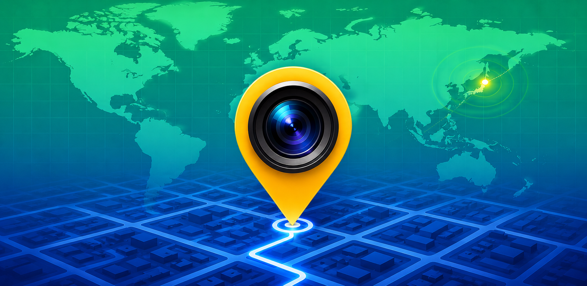

01
Location Verification
Every capture carries a map snapshot and GPS coordinates in your preferred format — decimal, degrees & minutes, DMS, or Plus Codes — plus address, altitude, and timestamp.
GPS coordinates, a map thumbnail, address, and timestamp — burned straight onto your photos and videos. Plus 3D scans and 360° panoramas, all processed on your device.

Every shot carries its own evidence — map, coordinates, address, and time, composited on-device.


One camera that records where, when, and what — in a form no one can question.
Every capture carries a map snapshot and GPS coordinates in your preferred format — decimal, degrees & minutes, DMS, or Plus Codes — plus address, altitude, and timestamp.
Record video with the live location overlay burned right in, and export the full GPS track as GPX, CSV, or KML. Stabilization modes and HDR (HLG) capture included.
Scan rooms with LiDAR or objects via photogrammetry. Get floor area and volume metrics, re-walk the result in a 6-DoF viewer, and export USDZ or PLY.
Stitch a full equirectangular panorama from high-resolution tiles, then explore it by drag or gyro. Export a geotagged Tiny Planet straight from any sphere.
Choose exactly what appears: GPS, address, date & time, altitude, pressure, weather, timezone, and a custom note. Strip or floating panel — plus your own logo in any corner.
Multi-lens support, dual-camera picture-in-picture, tap to focus, flash modes, shutter timer, 8 white-balance presets, and front/back switching.
Photos, videos, and 3D scans land in one chronological gallery. Organize into albums, multi-select, share in bulk, or open any location in Maps.
On iPhone and iPad, optionally sync your library through your own private iCloud Drive. On any device, pre-download map tiles so the geotag minimap keeps rendering with no signal.
Capture and compositing happen on-device. No accounts, no third-party tracking — and optional sync stays inside your own iCloud, never our servers.
Photos that speak for themselves — no one can question where or when the shot was taken.
Capture and compositing happen on your device. No accounts, no servers — no one standing between you and the proof.
On-device · privacy-firstFree to download. No account required.